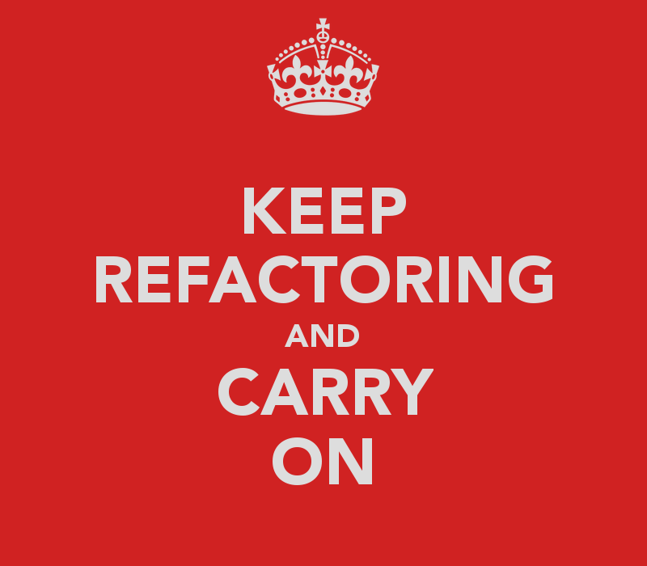

class: center, middle, inverse # Feature Toggles #### en enkel teknikk for å levere funksjonalitet enda raskere ### Ivar Conradi Østhus <table class="bottom"> <tr> <td class="rightify"><img src="images/twitter.png" height="20" /></td> <td class="leftify strong">@ivarconr</td> </tr> <tr> <td class="rightify"><img src="images/finn.png" height="20" /></td> <td class="leftify strong">ico@finn.no</td> </tr> </table> ??? - Ivar Østhus - 29år - jobber som utvikler i FINN - feature toggles --- class: background-img # master == motorvei til produksjon <img src="images/highway.jpg"> ??? - I FINN bruker vi master branchen som motorvei til prduksjon - Ruller ut artifakter flere ganger daglig - Kode som sjekkes inn på master: - bli bygget og enhets-tester kjøres - automatisk bli deployet til testmiljøer - integrasjonstester blir trigget - ny kode kan så deployes til produksjon - Alt som sjekkes inn på master: - _skal potensielt kunne havne i produksjon_ --- # Utfordinger - Optimalisert for å få ut små endringer / bugfixes - Det tar tid å utvikle nye funksjoner (1-3 uker) - flere personer og team - flere moduler/applikasjoner - Det tar tid fra kode commites til det kan deployes i produksjon --- # Feature Branches <img class="fullwitdh border" src="images/feature_branch_simple.jpg" /> ??? - Enkel teknikk - separate "feature branches" for å utvikle ny funksjonalitet - disse merges inn når funksjonen er klar --- class: center, middle --- # Feature Branches: parallel features <img class="fullwitdh border" src="images/feature_branch_double.jpg" /> --- class: background-img  ??? Ekstra vanskelig å refaktorere med feature branches. - rammeverk - bibliotekter - refaktoreringer --- # Feature Branches **Fordeler:** - Trygt å sjekke inn kode i egen branch - Ingen kode havner i produksjon før vi er klar - Teste nye ting uten at det berører andre - Code review med _pull-requests_ **Ulemper:** - Kan fort bli veldig dyrt/komplisert å merge - Vanskelig å dele __ny kode__ på tvers av brancher - Frykt for å refaktorere felleskode (rammeverk / bibliotek) - Vanskelig(ere) å vise frem ny kode før den er merget - Egne test-miljøer per branch? --- class: background-img # Feature Toggles <img src="images/Merrydown_Cider Factory.jpg"> --- # Feature Toggles: Enkle if-tester ```java if(unleash.isEnabled("AwesomeFeature")) { //do some magic } else { //do old boring stuff } ``` --- # Minimer impact - Så få _if_-sjekker som mulig - Beskytt ingangang (lenke) til nye UI-komponenter - Nye APIer trenger ikke beskyttelse - eksisterende klienter kjenner ikke til muligheten --- class: background-img # Feature Toggles: Kodereåte <img src="images/pollution.jpg"> ??? - Når du ikke trenger en feature toggles lenger skal denne slettes - Kostbart å vedlikeholde over tid - Så få permanente feature toggles som mulig --- # Del opp nye 'features' så mye du kan - Selv om vi har feature toggles skal vi dele opp nye funksjon - Jo tidligere vi tester nye funksjoner på ekte brukere jo raskere får vi feedback --- # Aktiveringsstrategier - #### For alle - #### For spesifikke brukere - #### På angitt server node - #### Basert på dato - #### Gradivs utrulling --- # Feature Toggles - simple if statements - hides certain execution paths - allows developers to release a version of a product that has unfinished features - This allows many small incremental versions of software to be delivered without the cost of constant branching and merging. - It's very important to retire release toggles once the pending features have bedded down in production - unngå big bang merges - integrere kode med master kontinuerlig - all kode som sjekkes inn er "produksjonsklar" - kjøre tester, enhetstester, integrasjonstester, manuell testing? - Er alle testmiljøene helt like som produksjon? --- # Anbefalt arbeidsflyt - Lokale brancher - Feature toggle dersom ikke ferdig innen en dag - Når funksjon er ferdig, skru den på for team/testere i alle miljøer. - Dersom funksjonen virker, skru den gradvis på for brukerene dine i produksjon - Oppdages feil? Vurder alvorlighet -> skru den av, implementer fiks og skur på funksjonen igjen --- # Feature toggles oppsummert - Unngår "major merges" - Lar oss rulle ut funksjoner før de er helt ferdig - Lar oss teste tidlig i produksjon - Økt kontroll med når en ny funksjon aktiveres - Lett å rulle tilbake nye funksjoner --- # Psst: Unleash ### [https://github.com/finn-no/unleash](https://github.com/finn-no/unleash) --- # Takk for meg! - @ivarconr - ico@finn.no #### Kilder brukt i denne presentasjonen - http://martinfowler.com/bliki/FeatureToggle.html - http://en.wikipedia.org/wiki/Feature_toggle - http://codeascraft.com/2011/02/04/how-does-etsy-manage-development-and-operations/ - http://blog.disqus.com/post/789540337/partial-deployment-with-feature-switches